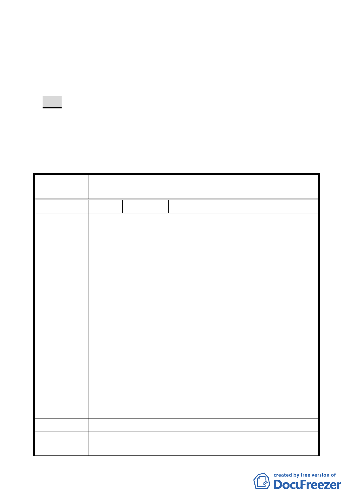

員會（大會）審議。
十三、101 年 8 月 21 日市府都市發展局函送第二次專案小組審查
意見回應說明及條文修正對照表等資料到會，續提委員會
（大會）審議。
決議：
一、發展局本次會議所研提「修正對照表」之條文內容已依專案
小組審查意見修正，本案同意修正通過。
二、「公民或團體所提意見綜理表」審決同專案小組審查意見（如
後附）。
臺北市都市計畫委員會公民或團體所提意見綜理表
修訂本市都市計畫「臺北市山坡地開發建築要點」為「臺北市
案 名 都市計畫劃定山坡地開發建築管制規定」案
編 號 1 陳情人
劉合琛
主旨：有關公開展覽修訂『臺北市山坡地開發建築要點』為『臺
北市都市計畫劃定山坡地開發建築管制規定』案，部分
修訂內容嚴重影響憲法保障之人民受益權，請 貴委員會
修正後再行公告。
說明：
壹、依據公展之修正條文第三條：『未開闢都市計畫道路部分，
申請者應協助開闢完成全部寬度（含排水系統），並連結鄰
近已開闢完成之都市計畫道路。』，若該修正條文修正通過
勢必造成未徵收之計畫道路私人土地部分地主漫天開價、
陳情理由
阻礙開發之情事。
貳、請 貴委員會明確解釋條文中『申請者應協助』是否還包括
由申請者出面購買未徵收之私人道路用地，若真如此必將
造成民間開發困難，甚至無法開發之情事。
參、徵收私人土地繼而鋪路、造橋屬於政府應辦理的事情實乃
天經地義，也唯有政府才有如此之公權力可以排除萬難，
怎可利用該修正條文將政府應作為的事情推諉給毫無公權
力的尋常百姓。
肆、請 貴委員會刪除或修正該侵犯人民財產權之條文。
建議辦法
1.基於加強山坡地安全管理既定政策，山坡地開發建築以整體
市 府 回 應 開發為原則，整體考量交通動線、水土保持、生態景觀等。
- 12 -